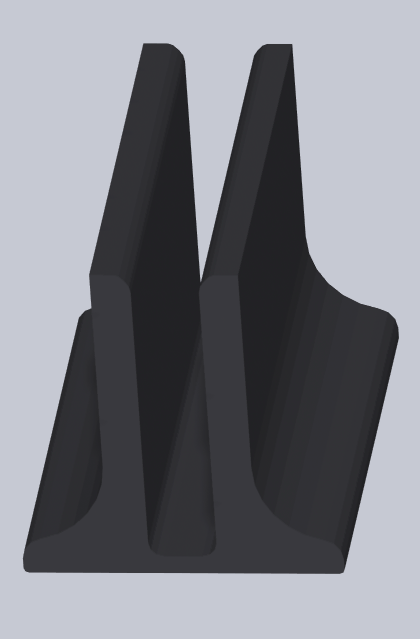
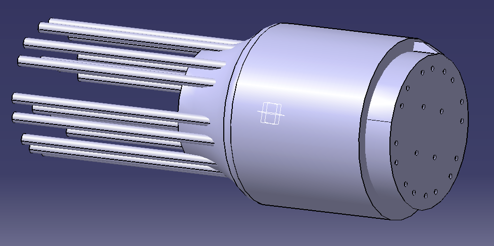
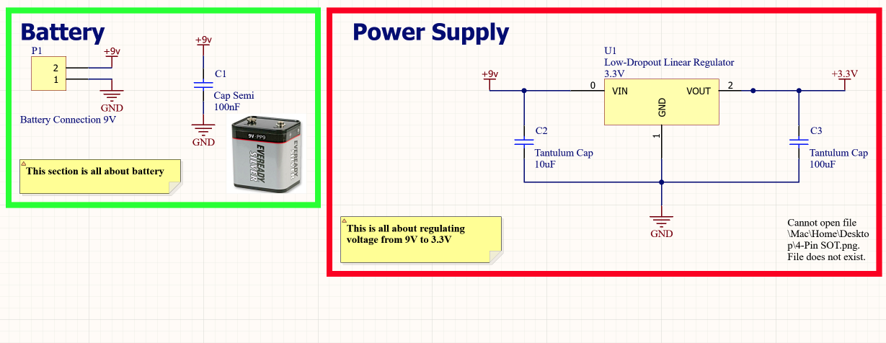
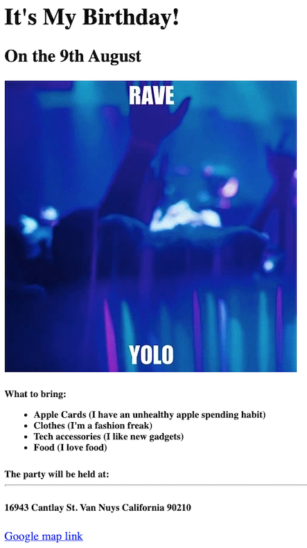
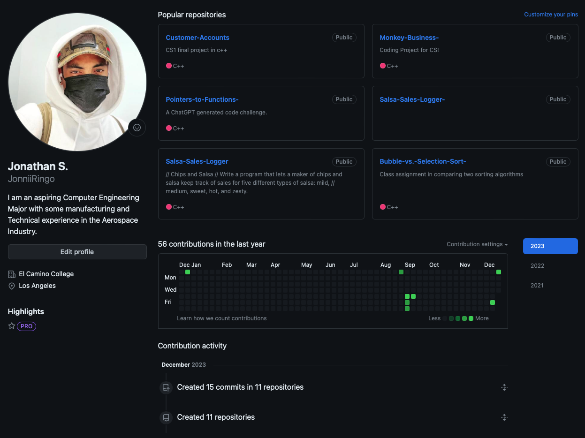

The Minimalist Docking station was designed for the apple M series Macbook pro, both 14" and 16". It's small quare footprint & sturdy sleek design makes it a great desktop essential. Great space savings and adds a bit of personal touch to your own custome desk setup. Made from 100% recycled PLA. Order yours today through the "Contact Me" link.

The Protolink Connector is a 3D printed connector standard aimed at consolodating GPIO and power needs in prototyping and testing solutions. The connector provides ease of use and static configuration and standardization to the small scale prototyping, testing, or DIY project scale. Virtual and Physical products available for purchase. Order yours through the "contact me" page.

The Smart MCU is a configurable hardware stand alone micro controller that comes with preloaded packages for various projects. The modular design and multiple modes allows for quick product design workflow. Unit can be configured as a controller, a tester, and emulator. Book a consultation through the "Contact Me" link.

This Digital Invite is a culmination of of my curent web design skills. Basic small business website consultations available throught the "Contact Me" link for Various small scale solutions.

For a detailed view of my overall computer science journey please visit my GitHub. It's also as diverse as my portfolio. Projects range from verilog to python projects of various levels of completion. I hope you will enjoy the variety on my GitHub. Click the link above to be redirected to my GitHub profile.